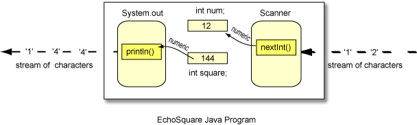

QUESTION 11:
Can arithmetic be done with strings of characters?


Yes.
nextInt()
The nextInt() method of a Scanner object reads in a string of digits
(characters)
and converts them into an int type.
The Scanner object reads the characters one by one
until it has collected
those that are used for one integer.
Then it converts them into numeric data,
and stores that into an int variable,
num.

Next the program does some arithmetic with the numeric data in num and
stores the result in square.
Finally the result is sent to println which converts the numeric result
into characters and prints them out (along with some other characters).
The nextInt() method scans through the
input stream character by character, gathering characters
into groups that can be converted into numeric data.
It ignores any spaces and end-of-lines that may separate
these groups.
Can arithmetic be done with strings of characters?